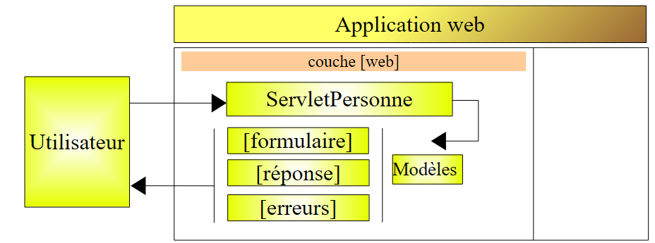
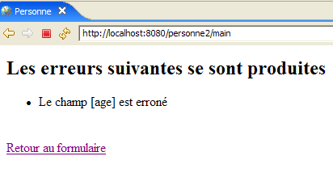
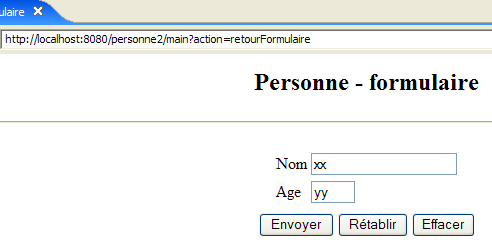
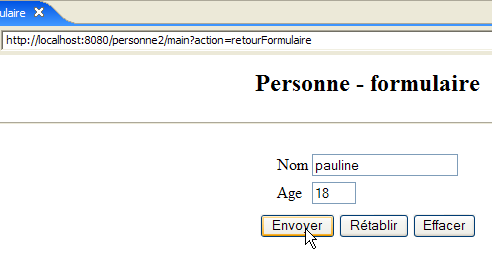
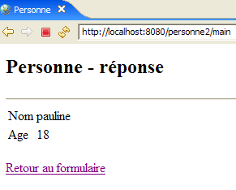
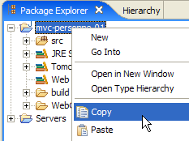
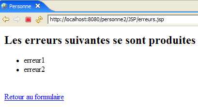

6. تطبيق الويب MVC [person] – الإصدار 2
سنقدم الآن متغيرات للتطبيق السابق [/person1]، والتي سنسميها [/person2، /person3، ...]. لا تغير هذه المتغيرات البنية الأصلية للتطبيق، والتي تظل كما يلي:

بالنسبة لهذه المتغيرات، سنبقي شرحنا موجزًا. سنعرض فقط التغييرات التي تم إجراؤها مقارنة بالإصدار السابق.
6.1. مقدمة
سنقوم الآن بإضافة إدارة الجلسات إلى تطبيقنا. دعونا نستعرض النقاط التالية:
- يُعد الحوار HTTP بين العميل والخادم سلسلة من تسلسلات الطلب والاستجابة المستقلة عن بعضها البعض
- تعمل الجلسة كذاكرة مؤقتة بين تسلسلات الطلب والاستجابة المختلفة من نفس المستخدم. إذا كان هناك N مستخدمًا، فسيكون هناك N جلسة.
توضح سلسلة الشاشات التالية ما هو مطلوب الآن في تشغيل التطبيق:
التبادل رقم 1
 |  |
الميزة الجديدة هي رابط العودة إلى النموذج، الذي تمت إضافته إلى عرض [الأخطاء].
المراسلة رقم 2
 |  |
في التبادل رقم 1، قدم المستخدم القيمتين (xx، yy) لزوج (name، age). إذا علم الخادم بهذه القيم أثناء التبادل، فإنه "ينساها" في نهاية التبادل. ومع ذلك، يمكننا أن نرى أنه خلال التبادل رقم 2، يمكنه عرض قيمهما مرة أخرى في ردّه. إن مفهوم الجلسة هو الذي يسمح، في هذه الحالة، لخادم الويب بتخزين البيانات خلال التبادلات المتتالية بين العميل والخادم. هناك حلول أخرى ممكنة لهذه المشكلة.
خلال التبادل رقم 1، سيخزن الخادم الزوج (الاسم، العمر) الذي أرسله العميل في الجلسة حتى يتمكن من عرضه خلال التبادل رقم 2.
فيما يلي مثال آخر على تنفيذ جلسة عمل بين تبادلين:
التبادل رقم 1
 |  |
الميزة الجديدة هي رابط العودة إلى النموذج، الذي تمت إضافته إلى صفحة الرد.
المراسلة رقم 2
 |  |
6.2. مشروع Eclipse
لإنشاء مشروع Eclipse [mvc-personne-02] لتطبيق الويب [/personne2]، سنقوم بنسخ مشروع Eclipse [mvc-personne-01] لإعادة استخدام الكود الموجود. للقيام بذلك، اتبع الخطوات التالية:
[انقر بزر الماوس الأيمن على مشروع mvc-personne-01 -> نسخ]:

ثم [انقر بزر الماوس الأيمن في مستكشف الحزم -> لصق]:
 |  - أدخل اسم المشروع الجديد في [1] واسم مجلد موجود ولكنه فارغ في [2] |
ثم يتم إنشاء مشروع [mvc-personne-02]:

في الوقت الحالي، هو مطابق لمشروع [mvc-personne-01]. سنحتاج إلى إجراء بعض التغييرات يدويًا قبل أن نتمكن من استخدامه. انتقل إلى عرض [Servers] وحاول إضافة هذا التطبيق الجديد إلى تلك التي يديرها Tomcat:
 |  |
يمكننا أن نرى في [1] أن المشروع الجديد [mvc-personne-02] غير معترف به من قبل Tomcat. لكي يتعرف عليه Tomcat، يجب تعديل ملف التكوين الخاص بمشروع [mvc-personne-02]. استخدم خيار [File / Open File] لفتح الملف [<mvc-personne-02>/.settings/.component]:
<?xml version="1.0" encoding="UTF-8"?>
<project-modules id="moduleCoreId">
<wb-module deploy-name="mvc-personne-01">
<wb-resource deploy-path="/" source-path="/WebContent"/>
<wb-resource deploy-path="/WEB-INF/classes" source-path="/src"/>
<property name="java-output-path" value="/build/classes/"/>
<property name="context-root" value="personne1"/>
</wb-module>
</project-modules>
يحدد السطر 3 اسم وحدة الويب المراد نشرها داخل Tomcat. هنا، هذا الاسم هو نفسه اسم مشروع [mvc-personne-01]. نغيره إلى [mvc-personne-02]:
<wb-module deploy-name="mvc-personne-02">
بالإضافة إلى ذلك، يمكننا اغتنام هذه الفرصة لتعديل اسم سياق التطبيق [mvc-personne-02] في السطر 7، والذي يتعارض مع اسم المشروع [mvc-personne-01]:
<property name="context-root" value="personne2"/>
كان من الممكن إجراء هذا التغيير الثاني مباشرةً داخل Eclipse. ومع ذلك، لم أجد طريقة لإجراء التغيير الأول دون المرور عبر ملف التكوين.
بمجرد الانتهاء من ذلك، نقوم بحفظ ملف [.content] الجديد، ثم نخرج من Eclipse ونعيد تشغيله حتى تصبح التغييرات سارية المفعول.
بمجرد إعادة تشغيل Eclipse، دعونا نجرب العملية التي فشلت سابقًا:
|  |
هذه المرة، تم التعرف على مشروع [mvc-personne-02]. نضيفه إلى المشاريع التي تم تكوينها للتشغيل على Tomcat:

6.3. تكوين تطبيق الويب [personne2]
ملف web.xml لتطبيق /personne2 هو كما يلي:
<?xml version="1.0" encoding="UTF-8"?>
<web-app id="WebApp_ID" version="2.4"
xmlns="http://java.sun.com/xml/ns/j2ee"
xmlns:xsi="http://www.w3.org/2001/XMLSchema-instance"
xsi:schemaLocation="http://java.sun.com/xml/ns/j2ee http://java.sun.com/xml/ns/j2ee/web-app_2_4.xsd">
<display-name>mvc-personne-02</display-name>
<!-- ServletPersonne -->
<servlet>
<servlet-name>personne</servlet-name>
<servlet-class>
istia.st.servlets.personne.ServletPersonne
</servlet-class>
<init-param>
<param-name>urlReponse</param-name>
<param-value>
/WEB-INF/vues/reponse.jsp
</param-value>
</init-param>
<init-param>
<param-name>urlErreurs</param-name>
<param-value>
/WEB-INF/vues/erreurs.jsp
</param-value>
</init-param>
<init-param>
<param-name>urlFormulaire</param-name>
<param-value>
/WEB-INF/vues/formulaire.jsp
</param-value>
</init-param>
<init-param>
<param-name>urlControleur</param-name>
<param-value>
main
</param-value>
</init-param>
<init-param>
<param-name>lienRetourFormulaire</param-name>
<param-value>
Retour au formulaire
</param-value>
</init-param>
</servlet>
<!-- Mapping ServletPersonne-->
<servlet-mapping>
<servlet-name>personne</servlet-name>
<url-pattern>/main</url-pattern>
</servlet-mapping>
<!-- welcome files -->
<welcome-file-list>
<welcome-file>index.jsp</welcome-file>
</welcome-file-list>
</web-app>
هذا الملف مطابق للملف الموجود في الإصدار السابق، باستثناء أنه يعلن عن معلمتي تهيئة جديدتين:
- السطر 6: تم تغيير اسم العرض لتطبيق الويب إلى [mvc-personne-02]
- الأسطر 31–36: تحدد معلمة التكوين المسماة [urlController]، وهي عنوان URL [الرئيسي] الذي يؤدي إلى سيرفلت [ServletPersonne]
- الأسطر 37–42: تحدد معلمة تكوين باسم [lienRetourFormulaire]، وهي نص الرابط الذي يعود إلى النموذج في صفحات JSP [erreurs.jsp] و[reponse.jsp].
تتغير الصفحة الرئيسية [index.jsp]:
<%@ page language="java" contentType="text/html; charset=ISO-8859-1"
pageEncoding="ISO-8859-1"%>
<!DOCTYPE HTML PUBLIC "-//W3C//DTD HTML 4.01 Transitional//EN">
<%
response.sendRedirect("/personne2/main");
%>
- السطر 5: تقوم صفحة [index.jsp] بإعادة توجيه العميل إلى عنوان URL لوحدة التحكم [ServletPersonne] في التطبيق [/personne2].
6.4. كود العرض
6.4.1. عرض [form]
هذا العرض مطابق لعرض الإصدار السابق:

يتم إنشاؤه بواسطة صفحة JSP التالية [formulaire.jsp]:
<%@ page language="java" contentType="text/html; charset=ISO-8859-1"
pageEncoding="ISO-8859-1"%>
<!DOCTYPE HTML PUBLIC "-//W3C//DTD HTML 4.01 Transitional//EN">
<%
// on récupère les données du modèle
String nom=(String)session.getAttribute("nom");
String age=(String)session.getAttribute("age");
String urlAction=(String)request.getAttribute("urlAction");
%>
<html>
<head>
<title>Personne - formulaire</title>
</head>
<body>
<center>
<h2>Personne - formulaire</h2>
<hr>
<form action="<%=urlAction%>" method="post">
<table>
<tr>
<td>Nom</td>
<td><input name="txtNom" value="<%= nom %>" type="text" size="20"></td>
</tr>
<tr>
<td>Age</td>
<td><input name="txtAge" value="<%= age %>" type="text" size="3"></td>
</tr>
<tr>
</table>
<table>
<tr>
<td><input type="submit" value="Envoyer"></td>
<td><input type="reset" value="Rétablir"></td>
<td><input type="button" value="Effacer"></td>
</tr>
</table>
<input type="hidden" name="action" value="validationFormulaire">
</form>
</center>
</body>
</html>
ما الجديد:
- السطر 19: يحتوي النموذج الآن على سمة [action] التي تمثل عنوان URL الذي سيقوم المتصفح بإرسال قيم النموذج إليه عندما ينقر المستخدم على زر [Submit]. سيكون للمتغير [urlAction] القيمة action="main". يتم عرض عرض [form] بعد قيام المستخدم بالإجراءات التالية:
- الطلب الأولي: GET /person2/main
- النقر على رابط [العودة إلى النموذج]: GET /person2/main?action=retourFormulaire
نظرًا لأن السمة [action] لا تحدد عنوان URL مطلقًا (يبدأ بـ /) بل عنوان URL نسبي (لا يبدأ بـ /)، فسيستخدم المتصفح الجزء الأول من عنوان URL للصفحة المعروضة حاليًا [/person2] ويضيف إليه عنوان URL النسبي. وبالتالي، سيكون عنوان URL لطلب POST هو [/person2/main]، وهو عنوان URL لوحدة التحكم. وسيصاحب طلب POST هذا المعلمات [txtName، txtAge، action] من الأسطر 23 و27 و38.
- السطر 8: نسترد قيمة عنصر [urlAction] من النموذج. يتم استردادها من سمات الطلب الحالي. سيتم استخدامها في السطر 19.
- السطران 6-7: نسترد قيم عناصر [name، age] من النموذج. يتم استردادهما من سمات الجلسة بدلاً من سمات الطلب، كما في الإصدار السابق. وذلك لاستيعاب طلب [GET /person2/main?action=returnToForm] من الرابط في طرق العرض [response] و [errors]. قبل عرض هذين العرضين، يضع وحدة التحكم البيانات التي تم إدخالها في النموذج في الجلسة، مما يسمح لها باستردادها عندما ينقر المستخدم على رابط [العودة إلى النموذج] في عرضي [response] و [errors].
6.4.2. طريقة العرض [response]
تعرض طريقة العرض هذه القيم التي تم إدخالها في النموذج عندما تكون صالحة:
 |
بالمقارنة مع الإصدار السابق، تتمثل الميزة الجديدة في رابط [العودة إلى النموذج]. يتم إنشاء العرض بواسطة صفحة JSP التالية [response.jsp]:
<%@ page language="java" contentType="text/html; charset=ISO-8859-1"
pageEncoding="ISO-8859-1"%>
<!DOCTYPE HTML PUBLIC "-//W3C//DTD HTML 4.01 Transitional//EN">
<%
// on récupère les données du modèle
String nom=(String)request.getAttribute("nom");
String age=(String)request.getAttribute("age");
String lienRetourFormulaire=(String)request.getAttribute("lienRetourFormulaire");
%>
<html>
<head>
<title>Personne</title>
</head>
<body>
<h2>Personne - réponse</h2>
<hr>
<table>
<tr>
<td>Nom</td>
<td><%= nom %>
</tr>
<tr>
<td>Age</td>
<td><%= age %>
</tr>
</table>
<br>
<a href="?action=retourFormulaire"><%= lienRetourFormulaire %></a>
</body>
</html>
- السطر 31: الرابط للعودة إلى النموذج. يتكون هذا الرابط من مكونين:
- الهدف [href="?action=retourFormulaire"]. يتم عرض طريقة العرض [response] بعد إرسال النموذج [formulaire.jsp] عبر POST إلى عنوان URL [/personne2/main]. وبالتالي، فإن عنوان URL الأخير هو الذي يتم عرضه في المتصفح عند عرض طريقة العرض [response]. سيؤدي النقر على رابط [العودة إلى النموذج] إلى إرسال طلب GET من المتصفح إلى عنوان URL المحدد بواسطة سمة [href] للرابط، وهو في هذه الحالة "?action=retourFormulaire". إذا لم يتم تحديد عنوان URL في [href]، فسيستخدم المتصفح عنوان URL للعرض المعروض حاليًا، أي [/personne2/main]. في النهاية، سيؤدي النقر على رابط [العودة إلى النموذج] إلى تشغيل طلب GET من المتصفح إلى عنوان URL [/person2/main?action=retourFormulaire]، أي عنوان URL لوحدة التحكم في التطبيق مصحوبًا بمعلمة [action] لإخباره بما يجب القيام به.
- نص الرابط. سيكون هذا جزءًا من القالب الذي يرسله وحدة التحكم إلى الصفحة ويتم استرداده في السطر 10.
6.4.3. عرض [errors]
تعرض هذه العرض أخطاء الإدخال في النموذج:
|
بالمقارنة مع الإصدار السابق، تتمثل الميزة الجديدة في رابط [العودة إلى النموذج]. يتم إنشاء العرض بواسطة صفحة JSP التالية [errors.jsp]:
<%@ page language="java" contentType="text/html; charset=ISO-8859-1"
pageEncoding="ISO-8859-1"%>
<!DOCTYPE HTML PUBLIC "-//W3C//DTD HTML 4.01 Transitional//EN">
<%@ page import="java.util.ArrayList" %>
<%
// on récupère les données du modèle
ArrayList erreurs=(ArrayList)request.getAttribute("erreurs");
String lienRetourFormulaire=(String)request.getAttribute("lienRetourFormulaire");
%>
<html>
<head>
<title>Personne</title>
</head>
<body>
<h2>Les erreurs suivantes se sont produites</h2>
<ul>
<%
for(int i=0;i<erreurs.size();i++){
out.println("<li>" + (String) erreurs.get(i) + "</li>\n");
}//for
%>
</ul>
<br>
<a href="?action=retourFormulaire"><%= lienRetourFormulaire %></a>
</body>
</html>
- السطر 26: الرابط الذي يعود إلى النموذج. هذا الرابط مطابق للرابط الموجود في عرض [response]. يُنصح القارئ بمراجعة التفسيرات المقدمة لذلك العرض إذا لزم الأمر.
6.5. اختبار طرق العرض
لاختبار طرق العرض السابقة، نقوم بنسخ صفحات JSP الخاصة بها في مجلد /WebContent/JSP لمشروع Eclipse:

ثم، في مجلد JSP، يتم تعديل الصفحات على النحو التالي:
[form.jsp]:
...
<%
// -- test : on crée le modèle de la page
session.setAttribute("nom","tintin");
session.setAttribute("age","30");
request.setAttribute("urlAction","main");
%>
<%
// on récupère les données du modèle
String nom=(String)session.getAttribute("nom");
String age=(String)session.getAttribute("age");
String urlAction=(String)request.getAttribute("urlAction");
%>
تمت إضافة السطور 4–5 لإنشاء النموذج المطلوب للصفحة في السطور 11–13.
[response.jsp]:
<%
// -- test : on crée le modèle de la page
request.setAttribute("nom","milou");
request.setAttribute("age","10");
request.setAttribute("lienRetourFormulaire","Retour au formulaire");
%>
<%
// on récupère les données du modèle
String nom=(String)request.getAttribute("nom");
String age=(String)request.getAttribute("age");
String lienRetourFormulaire=(String)request.getAttribute("lienRetourFormulaire");
%>
تمت إضافة الأسطر 4–6 لإنشاء القالب المطلوب للصفحة في الأسطر 11–13.
[errors.jsp]:
<%
// -- test : on crée le modèle de la page
ArrayList<String> erreurs1=new ArrayList<String>();
erreurs1.add("erreur1");
erreurs1.add("erreur2");
request.setAttribute("erreurs",erreurs1);
request.setAttribute("lienRetourFormulaire","Retour au formulaire");
%>
<%
// on récupère les données du modèle
ArrayList erreurs=(ArrayList)request.getAttribute("erreurs");
String lienRetourFormulaire=(String)request.getAttribute("lienRetourFormulaire");
%>
تمت إضافة الأسطر 4–8 لإنشاء النموذج المطلوب للصفحة في الأسطر 13–14.
لنقم بتشغيل Tomcat إذا لم يكن قيد التشغيل بالفعل، ثم نطلب عناوين URL التالية:
 |  |
 |
نحصل على عدد المشاهدات المتوقع.
6.6. وحدة التحكم [ServletPersonne]
ستتولى وحدة التحكم [ServletPersonne] الخاصة بتطبيق الويب [/personne2] معالجة الإجراءات التالية:
لا. | الطلب | المصدر | المعالجة |
1 | [GET /person2/hand] | عنوان URL الذي أدخله المستخدم | - إرسال عرض [نموذج] فارغ |
2 | [POST /person2/hand] مع المعلمات [txtName, txtAge، action] | انقر على [إرسال] في [form] | - تحقق من قيم المعلمات [txtName، txtAge] - إذا كانت غير صحيحة، أرسل العرض [errors(errors)] - إذا كانت صحيحة، أرسل عرض [response(name,age)] |
3 | [GET /person2/main? action=returnForm] | انقر على [العودة إلى form] في عرض الاستجابة] و[الأخطاء]. | - إرسال عرض [form] مملوء مسبقًا بأحدث القيم المدخلة |
لذلك لدينا إجراء جديد للتعامل معه: [GET /person2/main?action=returnForm].
6.6.1. هيكل وحدة التحكم
هيكل وحدة التحكم [ServletPersonne] مطابق تقريبًا لهيكل الإصدار السابق:
ما الجديد:
- السطر 4: يتطلب استخدام الجلسة استيراد حزمة [HttpSession]
- الأسطر 28–30: تعالج الطريقة الجديدة [doRetourFormulaire] الإجراء الجديد: [GET /personne2/main?action=retourFormulaire].
6.6.2. تهيئة وحدة التحكم [init]
طريقة [init] مطابقة لتلك الموجودة في الإصدار السابق. وهي تتحقق من ملف [web.xml] بحثًا عن العناصر المعلنة في المصفوفة [parameters]:
- السطر 5: تمت إضافة المعلمات [controllerUrl] (عنوان URL للمتحكم) و[formBackLink] (نص الرابط لعرضي [response] و[errors]).
6.6.3. طريقة [doGet]
يجب أن تتعامل طريقة [doGet] مع الإجراء [GET /person2/main?action=formSubmit]، الذي لم يكن موجودًا من قبل:
- الأسطر 6–14: نتحقق من أن قائمة أخطاء التهيئة فارغة. إذا لم تكن كذلك، نعرض عرض [errors(initializationErrors)]، الذي سيبلغ عن الخطأ (الأخطاء).
لفهم هذا الكود، عليك أن تتذكر قالب عرض [errors]:
<%
// on récupère les données du modèle
ArrayList erreurs=(ArrayList)request.getAttribute("erreurs");
String lienRetourFormulaire=(String)request.getAttribute("lienRetourFormulaire");
%>
تتوقع طريقة العرض [errors] وجود عنصر مفتاح باسم "errors" في الطلب. يقوم وحدة التحكم بإنشاء هذا العنصر في السطر 8. كما تتوقع وجود عنصر مفتاح باسم "formSubmitLink". يقوم وحدة التحكم بإنشاء هذا العنصر في السطر 9. هنا، سيكون نص الرابط فارغًا. لذلك، لن يكون هناك رابط في عرض [errors] الذي يتم إرساله. في الواقع، إذا كانت هناك أخطاء أثناء تهيئة التطبيق، فيجب إعادة تكوين التطبيق. ولا داعي لتقديم خيار للمستخدم لمواصلة التطبيق عبر رابط.
- الأسطر 34–37: معالجة الإجراء الجديد [GET /person2/main?action=returnForm]
6.6.4. طريقة [doInit]
تتعامل هذه الطريقة مع الطلب رقم 1 [GET /person2/main]. بالنسبة لهذا الطلب، يجب أن تُرجع طريقة العرض الفارغة [form(name,age)]. وفيما يلي شفرة هذه الطريقة:
- السطر 4: يتم استرداد الجلسة الحالية إن وجدت؛ وإلا، يتم إنشاؤها (يتم تعيين المعلمة getSession على true).
- السطران 9-10: يتم عرض عرض [form]. تذكر القالب المتوقع لهذا العرض:
<%
// on récupère les données du modèle
String nom=(String)session.getAttribute("nom");
String age=(String)session.getAttribute("age");
String urlAction=(String)request.getAttribute("urlAction");
%>
- السطران 6-7: يتم تهيئة العناصر [name، age] في نموذج العرض [form] بسلسلتين فارغتين ووضعهما في الجلسة لأن هذا هو المكان الذي يتوقعه العرض.
- السطر 8: يتم تهيئة عنصر [urlAction] في النموذج بقيمة المعلمة [urlController] من ملف [web.xml] ووضعه في الطلب.
6.6.5. طريقة [doValidationFormulaire]
تقوم هذه الطريقة بمعالجة الطلب رقم 2 [POST /person2/main]، حيث المعلمات المرسلة هي [action، txtName، txtAge]. وفيما يلي شفرة هذه الطريقة:
- السطران 5-6: نسترد قيم المعلمات "txtNom" و"txtAge" من طلب العميل.
- الأسطر 8–10: يتم تخزين هذه القيم في الجلسة بحيث يمكن استرجاعها عندما ينقر المستخدم على رابط [العودة إلى النموذج] في عرضي [response] و [errors].
- الأسطر 12–19: يتم التحقق من صحة قيم كلا المعلمتين.
- السطور 21-28: إذا كانت أي من المعلمتين غير صالحة، يتم عرض عرض [errors(errors,returnToFormLink)]. تذكر القالب الخاص بهذا العرض:
<%
// on récupère les données du modèle
ArrayList erreurs=(ArrayList)request.getAttribute("erreurs");
String lienRetourFormulaire=(String)request.getAttribute("lienRetourFormulaire");
%>
- الأسطر 30–34: إذا كانت المعلمتان المسترجعتان "txtName" و"txtAge" تحتويان على قيم صالحة، فإننا نعرض عرض [response(name, age, formSubmitLink)]. تذكر قالب عرض [response]:
<%
// on récupère les données du modèle
String nom=(String)request.getAttribute("nom");
String age=(String)request.getAttribute("age");
String lienRetourFormulaire=(String)request.getAttribute("lienRetourFormulaire");
%>
6.6.6. طريقة [doRetourFormulaire]
تتعامل هذه الطريقة مع الطلب رقم 3 [GET /person2/main?action=formSubmit]. وفيما يلي شفرة هذه الطريقة:
بعد اكتمال هذه الطريقة، يجب عرض نموذج [form]، مملوءًا مسبقًا بآخر إدخالات المستخدم. فيما يلي قالب عرض [form]:
<%
// on récupère les données du modèle
String nom=(String)session.getAttribute("nom");
String age=(String)session.getAttribute("age");
String urlAction=(String)request.getAttribute("urlAction");
%>
لذلك يجب أن تقوم الطريقة [doRetourFormulaire] بإنشاء النموذج السابق.
- السطر 4: نسترد الجلسة التي خزن فيها المتحكم القيم المدخلة (الاسم، العمر).
- السطر 7: نسترد الاسم من الجلسة
- السطران 8-9: إذا لم يكن موجودًا، نضيفه بقيمة فارغة. لا ينبغي أن يحدث هذا السيناريو أثناء التشغيل العادي للتطبيق، حيث إن الإجراء [returnForm] يحدث دائمًا بعد الإجراء [validateForm]، الذي يحدث بعد حفظ البيانات المدخلة في الجلسة. ومع ذلك، قد تنتهي صلاحية الجلسة لأنها ذات عمر محدود، غالبًا ما يكون بضع عشرات من الدقائق. في هذه الحالة، أنشأ السطر 4 جلسة جديدة لن يتم العثور فيها على الاسم. لذلك، نقوم بتعيين اسم فارغ في الجلسة الجديدة.
- الأسطر 11-13: نفعل الشيء نفسه بالنسبة للعمر
- إذا تجاهلنا مشكلة انتهاء صلاحية الجلسة، فإن الأسطر 3-13 تكون غير ضرورية. عناصر [name, age] في النموذج موجودة بالفعل في الجلسة. لذلك، لا داعي لإعادتها إلى هناك.
- السطر 15: نحدد قيمة عنصر [urlAction] في النموذج
6.7. الاختبارات
ابدأ أو أعد تشغيل Tomcat. اطلب عنوان URL [http://localhost:8080/personne2] ثم كرر الاختبارات الموضحة في المثال في القسم 6.1.